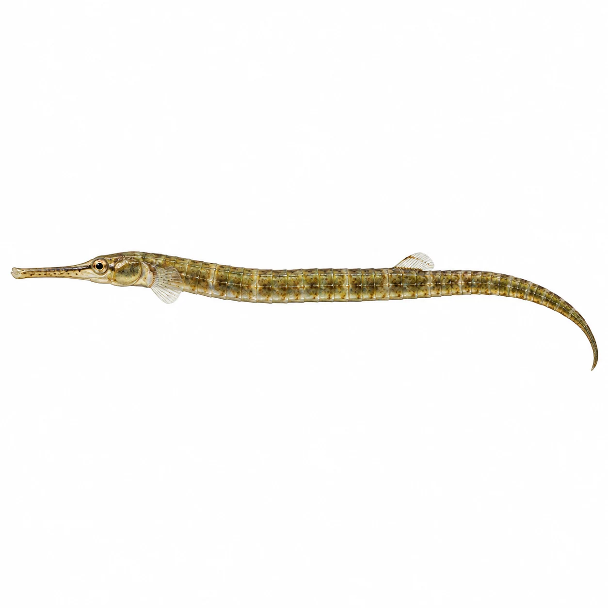
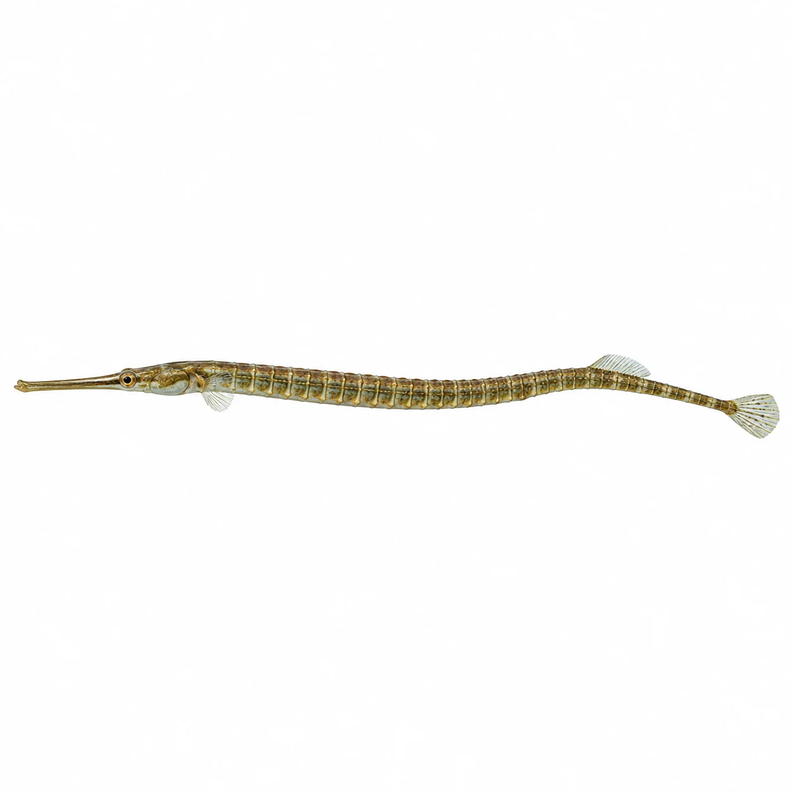
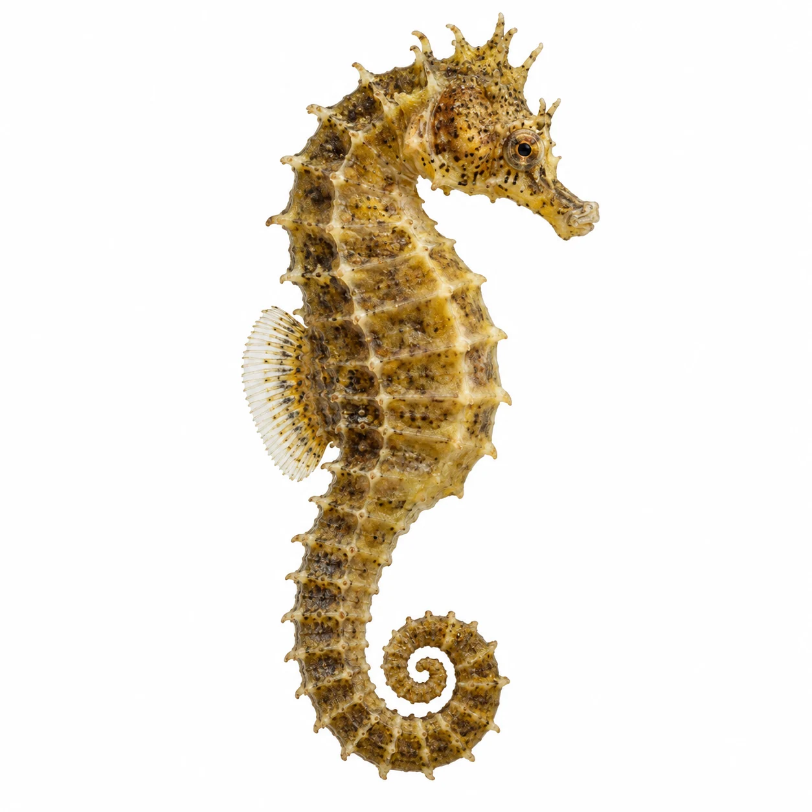
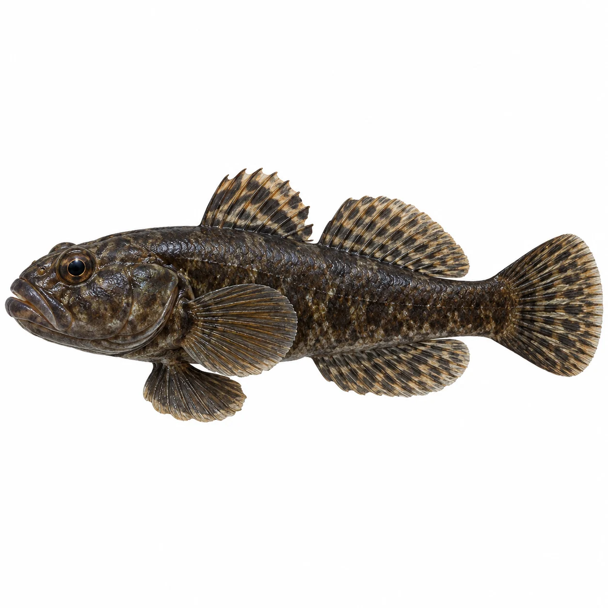
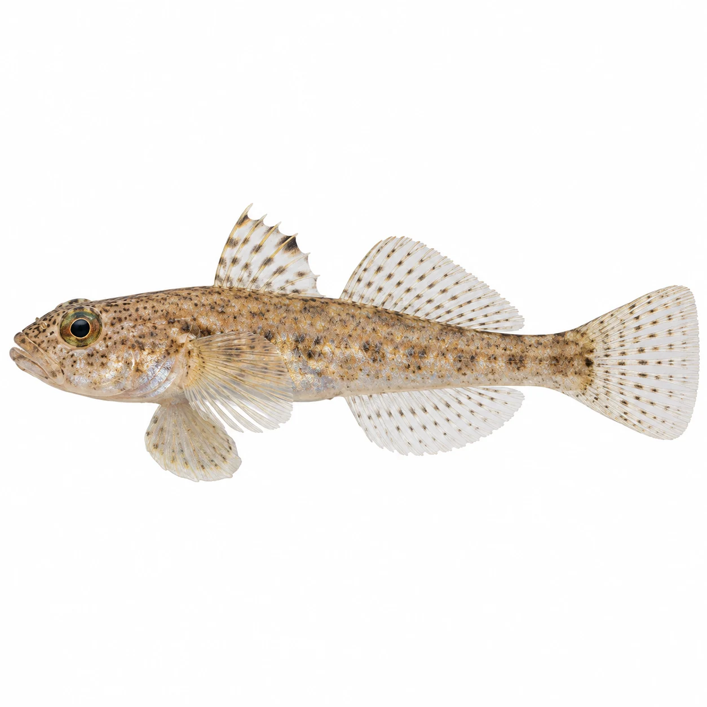
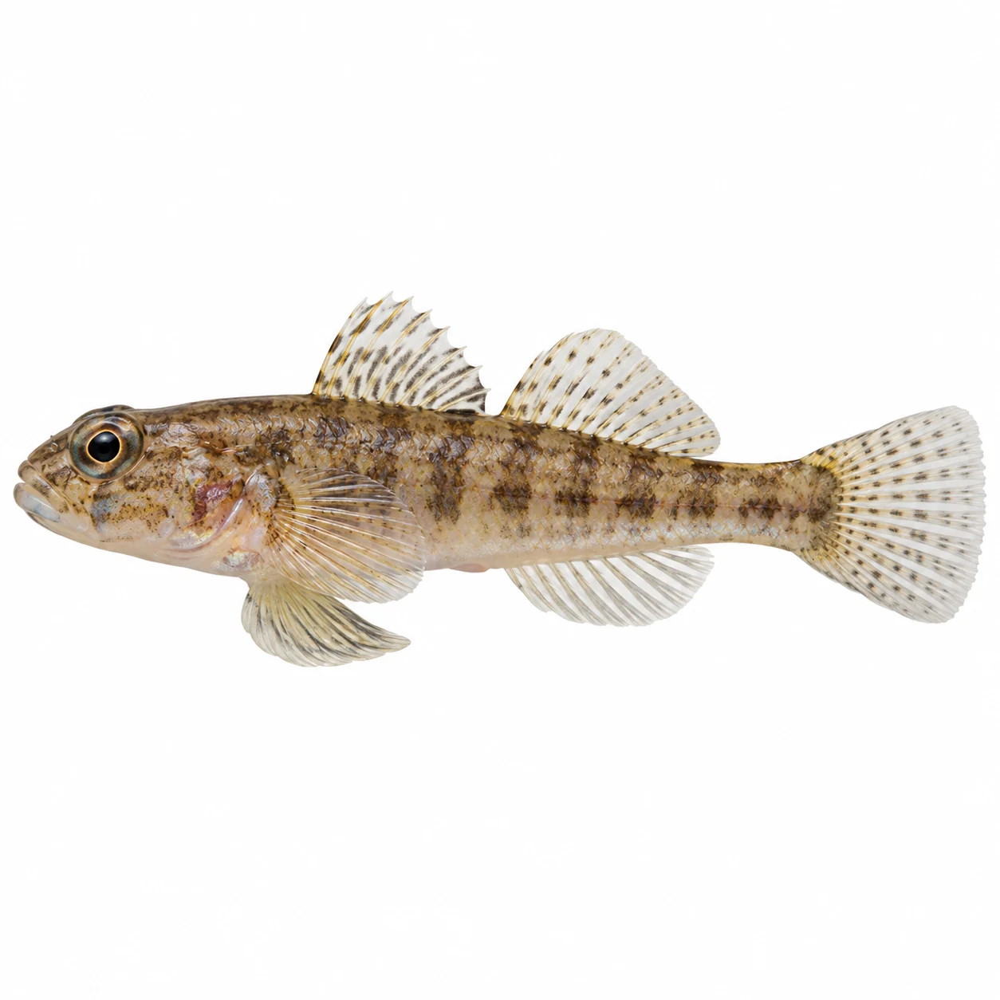
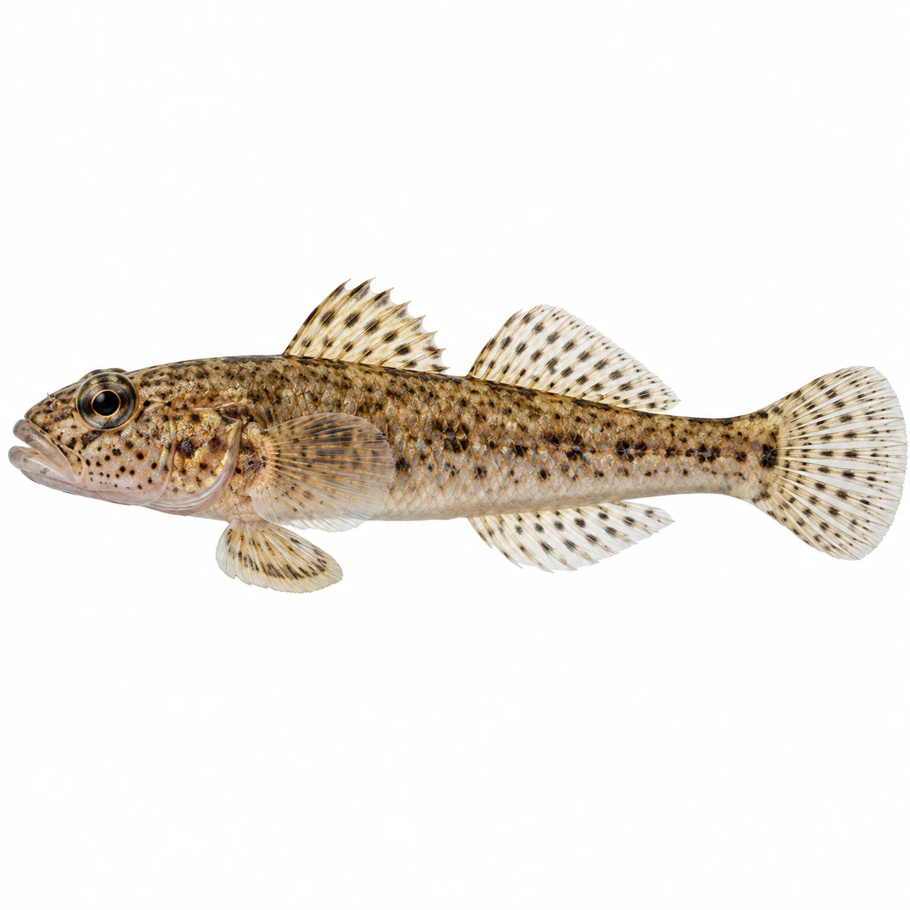
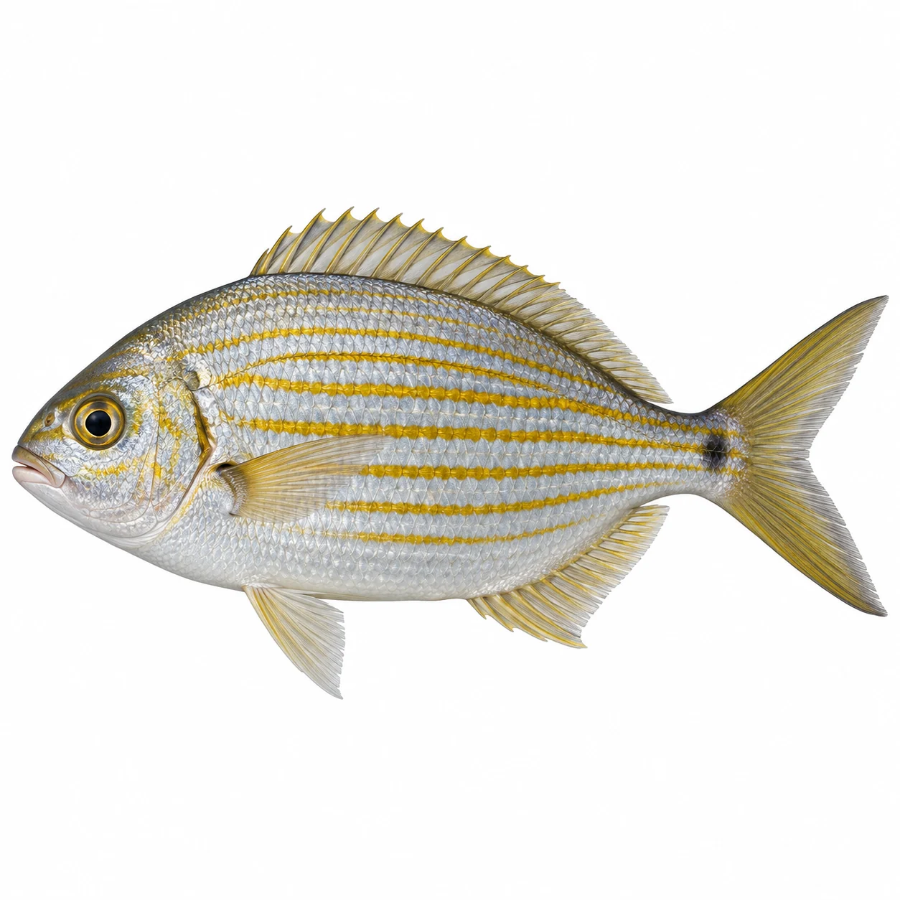
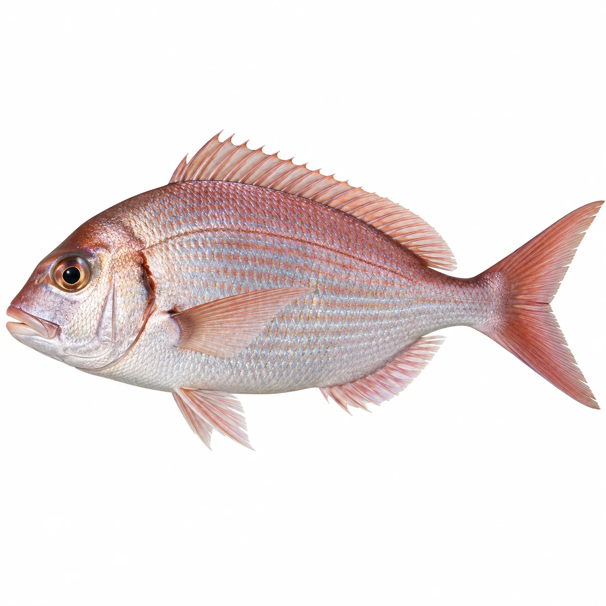
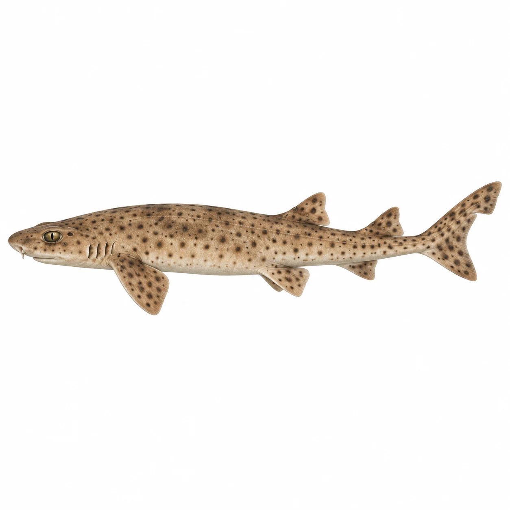

PetriHeil · 10 neue Fischbilder
Version 2.0.9 · KI-Abbildungen auf weißem Hintergrund. Nicht zur eindeutigen Artbestimmung verwenden.

Kleine SeenadelSyngnathus rostellatus · s48
SchlangennadelEntelurus aequoreus · s49
Seepferdchen (Kurzschnäuziges)Hippocampus hippocampus · s51
SchwarzgrundelGobius niger · s52
SandgrundelPomatoschistus minutus · s53
StrandgrundelPomatoschistus microps · s54
FleckengrundelPomatoschistus pictus · s55
GoldstriemeSarpa salpa · s58
MeerbrassePagellus bogaraveo · s59
Hai (Kleingefleckter Katzenhai)Scyliorhinus canicula · s61